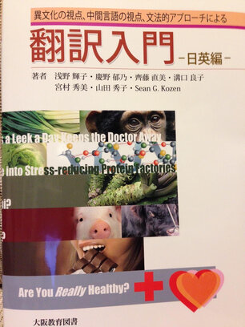

Administration Supervisor
Linguage 8/2012-7/2020 Nagoya, Japan
- Managed all foreign staff (100+) and was responsible for all administration duties regarding classes, curriculum, and foreign staff.
- Screened all foreign language teacher applicants and was responsible for hiring and new teacher orientation.
- Conducted class observations
- Developed curriculum to meet client needs
High School English Teacher
Kinjo High School 4/2009-7/2012 Nagoya, Japan
- Taught English conversation and elective courses
- Developed exams to evaluate student learning
- Ensured a classroom environment conducive to learning
Freelance Corporate English Teacher
Various Companies 4/2007-4/2009 Chubu Area in Japan
- Taught business English to company employees at major manufacturers in the Chubu Area.
- Provided students feedback on their progress and advice to improve trouble areas
Junior College English Instructor
Trident College of Languages 3/2004-3/2007 Nagoya, Japan
- Taught English conversation, composition, history, and TOEIC courses
- Was teacher in charge of writing courses; responsible for developing writing curriculum
- Developed exams to evaluate student learning
English Conversation Instructor
AEON Corporation 11/1998-1/2004 Nagoya, Japan
- Taught conversational English to students ranging from junior high school students to senior citizens.
High School Physics Teacher
C.E. Byrd High School 9/1997-6/1998 Shreveport, LA
- Taught high school physics and AP physics
- Created labs to assist in explaining and understanding physics concepts
Books Published
Introduction to Translation: Japanese to English (Click pic for link)
This is a textbook for beginners of translating Japanese to English. I co-authored this book with several Japanese translators in 2014.